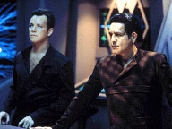
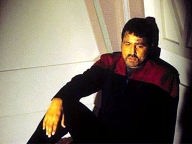
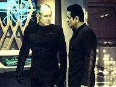
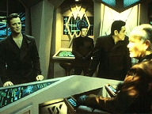
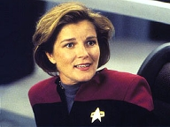
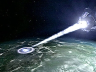
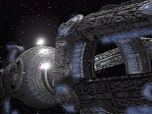
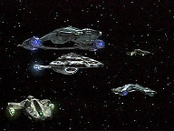
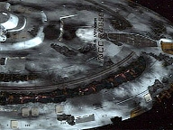

| MANCHETE
DO EPISÓDIO
Destruição
da Voyager muda a História
Episódio
anterior | Próximo episódio Sinopse:
Data Estelar: 51425.4.  Seriamente
danificada, a USS Voyager busca refúgio em uma nebulosa, operada por uma
tripulação diminuta. Na nave temporal, Chakotay e Tom são convocados para se
encontrar com Annorax, que deseja fazer uma proposta. Diz que mandará a Voyager
de volta no tempo, restaurando as suas condições originais, desde que eles
detalhem a extensão do envolvimento dela no território Krenim. A idéia é
completar os cálculos que restaurem o império em sua glória. Tom se recusa a
cooperar, mas Chakotay acredita que vale a pena arriscar confiar no anfitrião,
se isso significará a continuação da viagem de volta para casa.
Enquanto Chakotay ajuda a catalogar a jornada da Voyager,
Annorax lhe conta a história de um erro que cometeu assim que criou a nave
temporal. Ele destruiu o maior inimigo dos Krenim, mas, no processo, também
destruiu um importante anti-corpo presente na estrutura genética de sua
própria espécie, e 50 milhões de indivíduos sucumbiram a uma doença há
tempos erradicada. Ele vem tentando corrigir o erro desde então.
 Paris descobre uma vulnerabilidade na nave Krenim, mas Chakotay
o proíbe de agir contra Annorax. Porém, quando o anfitrião erradica outra
raça para restaurar parcialmente a linha do tempo Krenim, o comandante se
decepciona ao ver que ele recorreu de novo ao genocídio como resposta aos seus
problemas. Annorax acaba revelando a verdadeira força que o leva a agir dessa
forma. Sua esposa morreu como resultado de uma de suas incursões e ele espera
reverter o estrago feito.
Chakotay e Tom contatam a Voyager secretamente, fornecendo
a Janeway suas coordenadas. Ela forma uma coalisão com outras espécies e
planeja atacar a nave de Annorax assim que Tom desligar o reator temporal. Os
tripulantes da Voyager dividem-se entre as naves da aliança para a batalha, mas
a capitã permanece a bordo.
 O reator temporal é desativado, tornando a nave
vulnerável a armas convencionais. Annorax ordena que seus homens disparem
contra a frota que ataca. Janeway, então, traça um curso de colisão contra a
nave Krenim e o impacto desestabiliza o núcleo, provocando uma incursão
temporal dentro da própria nave de Annorax. Com a sua destruição, a linha do
tempo é restaurada, a Voyager acaba não entrando no território inimigo e Annorax,
por fim, reencontra a sua amada esposa.
Comentários:
O segmento da semana alcança uma marca que poucas
"segundas partes" conseguem: faz jus à primeira. É claro, o
telespectador tem que assistir ao episódio sem considerar que, ao final, nada
ali narrado terá acontecido. Terá que esquecer, também, as bases científicas
e a plausibilidade do enredo. Afinal, "Year of Hell" enfoca
viagem temporal e, como é de amplo conhecimento, Voyager não costuma
fazê-lo com êxito.
 De
fato, é um tanto frustrante que a história acabe como se nunca tivesse
acontecido, tendo as repercussões e aprendizados apagados. A famigerada tecla
"reset". Mas Jornada já produziu outros episódios sob o mesmo
princípio e, apesar da previsibilidade, eles se tornaram clássicos. Foi o caso
de "Yesterday's Enterprise", de A Nova Geração, e "The
Visitor", de Deep Space Nine. Assim, fica a lição de que o
sucesso das premissas "e se?" advém da dramaticidade contida naqueles
45 minutos de história. A idéia é entreter para a hora; não é acumular
subsídios para eventuais conseqüências ao longo série. E "Year of
Hell, Part II" é bem-sucedido.
O que marca o episódio é uma mudança no foco dos
personagens. Antes, havia elementos centrados no tema "família".
Agora -- talvez por conta dos meses que passaram --, a preocupação é outra. O
telespectador lida com a dualidade das obsessões de Janeway e Annorax. A
capitã parece preocupada em resgatar seus oficiais abduzidos e destruir a
nave-temporal. Annorax continua a interminável missão de trazer a esposa de
volta à vida.
 Opta-se
por ignorar, aqui, a lógica simplista dos roteiristas ao tratar da
manipulação temporal empreendida pelos Krenim. Evidentemente, apagar uma
espécie inteira da História deveria ter implicações por todo o Quadrante
Delta -- e além --, o que torna
questionável a limitação dos efeitos à
região em que a Voyager está.
Falhas à parte, o que enriquece o roteiro é
mesmo a participação de Kurtwood Smith,
ator com enorme presença em tela. Annorax chega a conquistar a simpatia do
telespectador. Suas ações são questionáveis. Mas o interessante é que ele
não é um vilão no sentido em que se está acostumado a ver em Jornada.
É um homem torturado, arrependido. Excelente a cena em que oferece um jantar
a Chakotay e Paris. Os pratos servidos, inventados por culturas que, na
verdade, nunca existiram. E seu olhar na hora de revelar a informação aos
convidados contrasta com a frieza das palavras.
 As
sucessivas intervenções que realizou já apagaram e trouxeram de volta
tantas espécies que Annorax aprendeu a racionalizar o genocídio. Tenta se
convencer de que não está dizimando povos, pois, na verdade, eles nunca
teriam existido em uma linha do tempo alternativa. Mas o tempo silenciosamente
"se vinga" dele. A arma, criada para eliminar os inimigos dos Krenim,
acabou apagando seu próprio império. Mais do que isso. Apagou sua esposa e
todo o futuro que teriam juntos. É
fantástica a forma como Annorax percebe a situação. O próprio tempo virou
um personagem. Tem humores, psicologias, sentimentos. Obstina-se em o fazer
pagar pelo que fez, durante toda a eternidade. E não resta alternativas a
Annorax, a não ser passar os séculos tentando se redimir.
A forma como a obsessão de Janeway é retratada é
igualmente notável. A capitã chega ao ponto de operar apenas por instintos.
Torna-se impulsiva, inquieta, ameaçadora, anárquica. O fã nem sempre
concorda com suas decisões ou se sensibiliza com a causa, mas entende por que
a personagem age da forma como o faz. Aqui, ela está disposta a abandonar
totalmente os protocolos para salvar a tripulação. Quando confrontada pelo
Doutor, recusa-se a obedecer ordens médicas e nem mesmo se intimida com o
prospecto de vir a sofrer uma Corte Marcial.
 Só
que o interessante é justamente a polêmica e falta de objetividade de
Janeway ao tomar decisões. A única voz que se levanta contra ela -- fora o
Doutor, que o faz dentro do regulamento -- é Seven, que ainda desconhece as
formalidades implícitas na cadeia de comando. A capitã é uma heroína, mas
também é um indivíduo falho. Leva a efeito quaisquer atitudes para atingir
seus objetivos. Neste quesito, não difere de Annorax. E Seven a lembra disso.
Quem também brilha, para a surpresa e agrado do
telespectador, é Chakotay. Ele tem uma participação maciça e consistente
no episódio. Foi muito bem bolada a ligação que os roteiristas
estabeleceram entre o comandante e Annorax. Convenceu também o antagonismo de
Tom. O dilema gerado em duas frentes só se resolve quando o capitão Krenim
volta a realizar incursões contra espécies. Apenas assim Chakotay percebe
que Annorax é "um caso perdido" e concorda com o colega da Voyager
que é hora de agir.
 Conforme
fora estabelecido na primeira parte, a tripulação da nave Krenim estava
cansada. Viajava na mesma estrada havia 200 anos. Queria desmantelar a arma e
seguir em frente. Assim, não é difícil compreender por que Obrist -- que
desenvolveu uma boa amizade com Tom -- assistiu na sabotagem ao núcleo do
reator. Em tempo, vale ressaltar que conta como ponto positivo o fato de os
próprios Krenim terem agido contra Annorax.
A batalha final é linda, os efeitos visuais
impressionam, "dá gosto" ver a Voyager aos pedaços. Mas a
resolução deliberada por Janeway é totalmente inaceitável. Aparentemente,
os roteiristas quiseram que o telespectador prestigiasse um heróico ato de
suicídio. Infelizmente, não colou. De onde a capitã tirou a idéia de que,
se destruísse a tempo-nave, restauraria toda a História? Ela não tinha
parâmetros para julgar aquilo. Desconhecia -- conforme ela mesmo mencionou no
episódio -- a lógica dos paradoxos temporais e procurava evitá-los.
 Se
fosse tudo tão simples assim -- e as cenas finais mostraram que ela estava
certíssima -- por que o próprio Annorax não teve o mesmo pensamento? Não
só era um cientista Krenim que dominava a tecnologia em questão, como
passara os dois últimos séculos buscando uma saída. Compreendia como poucos
o funcionamento da coisa toda. Também não fica claro o que foi restaurado. A
tempo-nave é destruída e, em seguida, aparece na tela novamente a
inscrição "Dia 1", com a USS Voyager em sua melhor forma. Depois,
vê-se Annorax com a esposa, projetando a sua arma. Tudo parece indicar que
ele ficou preso na situação por toda a eternidade. Se destino foi evitado?
Parece que não, mas não há como saber. Fica a dúvida.
Há diversos furos e questões não resolvidas no
roteiro, mas "Year of Hell, Part II" se salva pela soma do
pacote. Não é inferior à primeira parte, mas, também, não chega a ser
estupendo. Para a média de Voyager, soma-se como um dos melhores
episódios da série.
Citações:
Kim - "We've got three minutes of air
left."
("Temos mais três minutos de ar.")
Janeway - "How long can you hold your breath?"
("Por quanto tempo consegue segurar a respiração?") Annorax
- "You have no idea how you complicated my mission."
("Não têm idéia do quanto complicaram a minha missão.")
Paris - "Glad to hear it."
("Bom saber disso.") Annorax
- "This vessel is more than a weapon. It's a museum of lost histories."
("Esta
nave é mais do que uma arma. É um museu de histórias perdidas.") Tuvok
- "Remember this guideline: the Captain is always right."
("Lembre-se desta regra: a capitã sempre está certa.")
Seven - "Even when you know her logic is flawed?"
("Mesmo quando sua lógica é falha?")
Tuvok
- "Perhaps."
("Talvez.") Chakotay - "You've
been at this for 200 years, Annorax. What makes you think you'll ever succeed?"
("Você está nessa há 200 anos, Annorax? O que o faz achar que algum dia
conseguirá?")
Annorax - "What makes you think Voyager will
ever reach Earth? The odds against you are astronomical. Yet you keep trying."
("O
que o faz pensar que a Voyager chegará na Terra? As chances contra vocês
são astronômicas. Mesmo assim, continuam tentando.")
Chakotay - "You're right. But we don't destroy everything that stands
in our way."
("Tem razão. Mas não destruimos tudo o que aparece em nosso caminho.") Janeway - "Why
do I get the feeling you are testing me, Voyager?"
("Por que tenho a impressão de que está me testando, Voyager?") Doutor
- "Captain Kathryn Janeway, under Starfleet Medical Regulation 121,
Section A, I, the chief medical officer, do hereby relieve you of your active
command. Effective immediately... Have a sit."
("Capitã Kathryn Janeway, sob o Regulamento Médico da Frota Estelar 121,
Seção A, eu, o oficial médico chefe, a destituo do seu comando atual. Em
vigor imediatamente... Sente-se um pouco.")
Janeway - "How do you plan to
implement this protocol, Doctor? Mr. Tuvok doesn't have a security team, both
the brigs have been destroyed and, with the internal force fields offline you'll
have a hell of a time keeping me confined. You'd better grab a phaser, because
before I give up command you'll have to shoot me."
("Como planeja implementar esse protocolo, Doutor? O Sr. Tuvok não tem uma
equipe de segurança, ambas as celas foram destruídas e, com os campos de
contenção internos desativados, será um inferno conseguir me confinar. É
melhor pegar um phaser, porque antes de eu desistir do comando terá que
atirar em mim.")
Doutor
- "You realize this incident will be noted in my official logs. By
refusing my orders you risk a general Court Martial."
("Tem consciência de que este incidente será registrado nos meus diários
oficiais. Ao recusar as minhas ordens, corre o risco de enfrentar uma Corte Marcial geral.")
Janeway - "Compared to what I've been
throught the past few months, a court martial would be a small price to pay.
If we make it back home, I'll be happy to face the music."
("Em comparação ao que tenho enfrentado nesses últimos meses, uma Corte
Marcial seria pouco a pagar. Se conseguirmos chegar em casa, ficarei feliz em
encarar a música.") Tuvok - "Given
Voyager's damaged state, the probability of your suviving in an armed conflict
is marginal."
("Dado o estado de danos da Voyager, a probabilidade de sua sobrevivência
a um conflito armado é mínima.")
Janeway - "I know the odds. But I have to stay. Voyager has done too
much for us."
("Eu sei das adversidades. Mas tenho que ficar. A Voyager fez demais por
nós")
Tuvok - "Curious. I never understood the Human compulsion to
emotionally bond with inanimate objects. This vessel has done nothing. It is
an assemblege of bulkheads, conduits, tritanium, nothing more."
("Curioso. Eu nunca entendi a compulsão humana em ligar-se emocionalmente
a objetos inanimados. Esta nave não fez nada. É uma montagem de anteparos,
conduítes, tritanium, nada mais.")
Janeway - "No, you are wrong. It's much more than that. This ship has
been our home, it's kept us together, it's been part of our family. As
illogical as this might sound, I feel as close to Voyager as I do to any other
member of my crew. It's carried us, Tuvok. Even nurtured us. And right now it
needs one of us."
("Não, está enganado. Ela é muito mais do que isso. Esta nave tem sido a
nossa casa, tem nos mantido juntos, tem sido parte da nossa família. Por mais
ilógico que isto possa parecer, sinto-me tão próxima da Voyager como me
sinto de qualquer outro membro da minha tripulação. Ela nos carregou, Tuvok.
Até nos nutriu. E neste momento precisa de um de nós.") Janeway - "Time's
up!"
("Tempo esgotado!")
Trivia:
 O médico da nave pode afastar o capitão de suas funções de acordo com o
Regulamento Médico da Frota Estelar 121, Seção A. Se o capitão não obedecer
a ordem, corre o risco de sofrer Corte Marcial.
O médico da nave pode afastar o capitão de suas funções de acordo com o
Regulamento Médico da Frota Estelar 121, Seção A. Se o capitão não obedecer
a ordem, corre o risco de sofrer Corte Marcial.
“Year of Hell, Part II” é um dos 5
episódios em que a USS Voyager é destruída de alguma forma. Os outros são “Deadlock”,
“Timeless”, “Course: Oblivion” e “Relativity”. Ficha
técnica: Direção de
Mike Vejar
Escrito por Brannon Braga e Joe Menosky
Exibido em
12/11/1997
Produção: 077 Elenco: Kate
Mulgrew como Kathryn Janeway
Robert Beltran como
Chakotay
Roxann Biggs-Dawson como B'Elanna Torres
Robert
Duncan McNeill como Tom Paris
Ethan Phillips como
Neelix
Robert Picardo como Doutor
Tim Russ
como Tuvok
Jeri Ryan como Seven of Nine
Garrett Wang como Harry Kim Elenco
convidado:
Kurtwood Smith como Annorax
John Loprieno como Obrist
Peter Slutsker como Comandante Krenim
Lise Simms como Esposa
Episódio
anterior | Próximo episódio
|